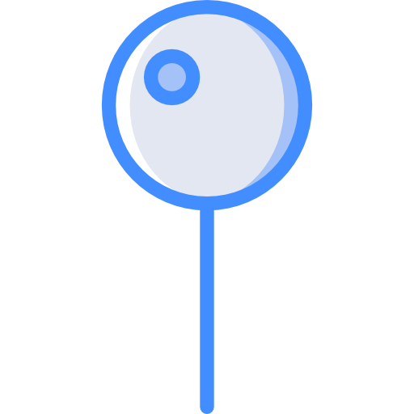
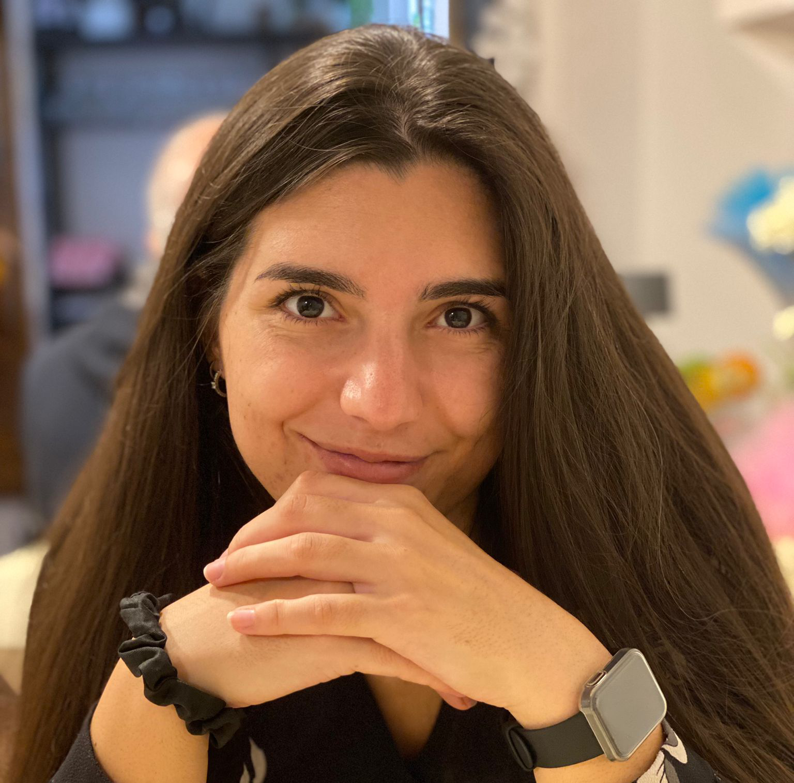

Generative Code Intelligence Workshop

Bremen, GermanyIn conjunction with IJCAI-ECAI 2026
Workshop ProgramThe workshop will be held on one day on August 16, 2026 as part of the IJCAI-ECAI 2026 conference.
The workshop program will include a 40-minute keynote, 25-minute paper presentations, and 10-minute short paper presentations, with the remaining time reserved for questions and discussion.
Session 1: Opening, Keynote & Security
09:00 - 09:10: Welcome & Opening Remarks
09:10 - 10:00: Invited Talk - From Python to Qiskit: Red Teaming AI at Scale
Giulio Zizzo, IBM Research
10:00 - 10:30: Mitigating Keyword Bias in Java Vulnerability Detection through Dual-Stream CodeBERT with Security Feature Engineering
Arjun Khurana, Talaya Farasat, Joachim Posegga and Florian Lemmerich
Coffee Break
Session 2: AI Agents and Pipeline Generation
11:00 - 11:30: ML2B: Benchmarking LLMs on Cross-Lingual ML Pipeline Generation
Ekaterina Trofimova, Zosya Shamina, Maria Selifanova, Artem Zaitsev, Remi Savchuk, Maxim Minets, Daria Ozerova, Emil Sataev, Denis Zuenko and Andrey Ustyuzhanin
11:30 - 12:00: Spec2Vision: Contract-Guided Delivery of AI-Generated Computer Vision Pipelines
Ghfran Jabour and Sergey Ivanov
12:00 - 12:30: Framing Writing as Code Generation: An Agentic LaTeX IDE for Scientific Manuscript Composition
Zhisheng Tang and Mayank Kejriwal
Lunch Break
Session 3: HPC and GPU Code Optimization
14:00 - 14:30: Agent Harnesses for GPU Kernel Optimization: A Taxonomy of Failure Modes and Design Implications
Alexandru Gherghescu, Will Martin and Rio Yokota
14:30 - 15:00: LLM-Based Porting of Optimized C++ to CUDA Through Deoptimization and Reoptimization
Daichi Mukunoki, Ryo Mikasa, Shun-Ichiro Hayashi, Tetsuya Hoshino and Takahiro Katagiri
15:00 - 15:30: HPC-AutoResearch: Adapting Autonomous Research Systems for HPC through Split-Phase Execution and LLM-Based Code Generation
Takanori Kotama, Shun-Ichiro Hayashi, Daichi Mukunoki, Rio Yokota, Satoshi Ohshima, Tetsuya Hoshino and Takahiro Katagiri
Coffee Break
Session 4: Code Maintenance & Emerging Workflows
16:00 - 16:30: Loc2Repair: A Framework for Evaluating the Impact of File-Level Issue Localization in Repo-Level LLM Repair
Mohammad Nour Al Awad and Sergey Ivanov
16:30 - 16:45: Beyond Text-Only Code Generation: Dynamic Visual Understanding in Software Engineering
Tuan Tran Anh, László Kopácsi and Daniel Sonntag - Extended Abstract
16:45 - 17:00: ClimateClaw: Repository-Grounded Code Generation for Executable Scientific Analysis Workflows on HPC Systems
Gizem Ekinci, Alexander Fischer, Sebastian Willmann, Koketso Molepo, Johanna Baehr, Kevin Sieck, Chao Li, Felix Oertel, Bianca Wentzel, Thomas Ludwig, Martin Bergemann, Jan Saynisch-Wagner and Christopher Kadow - Extended Abstract
Workshop Conclusion
With the growth in LLM usage across almost all industries and sectors, its security and robustness is increasingly important. Yet, LLM red teaming presents unique challenges compared to traditional ML robustness in scale, attacker modelling, and evaluation. In this talk we will discuss how red teaming methods have evolved to meet the new AI landscape, the challenges in the code space, and how efforts are being made to secure LLMs in emerging quantum languages such as Qiskit and Qrisp.
Extended Abstract
Extended Abstract
This workshop aims to offer a shared venue for researchers and practitioners involved in the design, development, and application of generative AI technologies, such as large language models (LLMs), to engage with experts in software engineering, security and verification.
Reasons behind the idea of this workshop arise from the widespread adoption of those cutting-edge AI technologies in the creation of code, which is prevalent in both academic research and industrial settings. As the utilization of these powerful tools continues to grow, there is an increasing necessity to ensure that the code they generate is secure and safe, ideally free from vulnerabilities.
However, controlling AI code generation is challenging because modern, often commercially-used, models operate as black boxes and frequently lack awareness of their own inaccuracies. As a consequence, AI generated code could introduce serious weaknesses in a source code corpora, which could become potentially difficult to identify when the AI tools are used massively. Roads towards a solution to this issue are numerous and open research questions in various fields: static analysis, security, benchmarking, fine-tuning or custom training of AI models, software engineering, explainable AI, and so on.
By bringing together experts from these communities, the workshop aims to foster interdisciplinary collaboration and facilitate the sharing of knowledge, providing a common ground of discussion about possible solutions to this challenge.
We invite submissions on all aspects related to generative code intelligence, including but not limited to:
May 14th, 2026 May 21st, 2026
June 12th, 2026
July 15th, 2026
August 16, 2026
All deadlines are 23:59 AoE (Anywhere on Earth) on the specified date.
We invite submissions in the following two categories:
Maximum 8 pages excluding references. These submissions should describe work that advances the current state of the art in the above or related areas.
Abstract only. These submissions could describe work in progress, tools, experiments, overviews, or improvements over existing work, in the above or related areas.
All submissions must be in English and follow the CEUR single column format. Papers should be submitted only through the workshop's submission system. All submissions will undergo a double-blind peer review process.
Paper will be submitted as PDF documents through EasyChair at this link https://easychair.org/conferences/?conf=gecoin2026.
The template for the submission can be found at this link https://www.overleaf.com/read/tssqrwhptnqy#c912f0.
All submissions will be peer-reviewed by at least three members of the program committee for quality and relevance.
We plan to include all regular papers in the Proceedings of the event, published at CEUR WS proceedings. CEUR WS proceedings are archival proceedings indexed by DBLP and Scopus.
University of Parma
Italy
eleonora.iotti@unipr.it
University of Parma
Italy
vincenzo.arceri@unipr.it

Ca' Foscari University of Venice
Italy
greta.dolcetti@unive.it
Imperial College London
United Kingdom
sergio.maffeis@imperial.ac.uk
Abhishek Dharmaratnakar
Adam Jones
Imperial College London
Aditya V Thakur
University of California Davis
Dalila Ressi
Ca' Foscari University of Venice
Davide Taibi
University of Southern Denmark - Vejle & University of Oulu - Finland
Giulio Zizzo
IBM Research
Lorenzo Cazzaro
University of Luxembourg
Lucas Cordeiro
The University of Manchester
Penghui Li
Columbia University